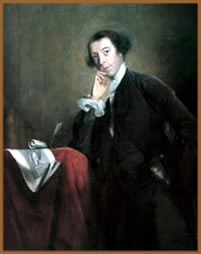
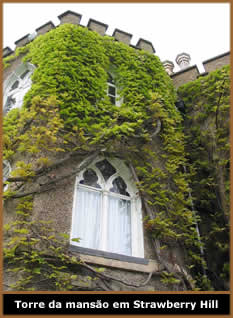

Horace Walpole nasceu em Londres,
Inglaterra, no dia 24 de setembro de 1717. Filho do primeiro ministro
Robert Walpole e sua esposa Catherine. Devido à não
semelhança entre o jovem Horace e seu pai, não apenas
física, mas também de personalidade, existia rumores
de que fosse fruto de uma relação adúltera
de Catherine. Porém, esse fato nunca fora comprovado.
Horace
Walpole passou boa parte de sua infância e criação
ao lado da mãe que vivia separada do marido. Em 1727, aos
dez anos de idade, teve início sua educação
escolar em "Eton", que se estendeu até 1734,
onde conheceu o célebre autor Thomas Gray. Posteriormente,
entre 1735 e 1738, ingressou e estudou matemática, música
e anatomia na "King's College" de Cambridge. Porém,
sua passagem foi abalada pela morte de sua mãe, em 1737,
a qual, o jovem Horace era muito apegado. Neste mesmo ano, seu
pai casou-se com uma antiga amante, Maria Skerrett.
Em 1739, viajou para França e Itália
na companhia de seu amigo Thomas Gray. Em Florença, Horace
conheceu a Senhora Mary Wortley Montagu. Em 1741, fazendo uso
da influência de seu pai, tornou-se membro do parlamento
inglês. Sir Robert Walpole, com investimentos bem sucedidos
no Exchequer e na Custom House, assegurou uma vida confortável
até sua morte em março de 1745.
Posteriormente, em 1747, Horace Walpole adquiriu
uma imensa propriedade em Strawberry Hill, Twickenham. Neste local,
com a ajuda de dois amigos, o arquiteto amador John Chute e Richard
Bentley, deu início à construção de
seu pequeno castelo, ou uma mansão que é freqüentemente
citada como uma referência do "revival" da arquitetura
gótica na Inglaterra. Além de contar com uma imensa
biblioteca, o interior da suntuosa residência foi decorado
com pinturas, esculturas e porcelanas. Porém, alguns detalhes
arquitetônicos foram feitos com papel machê. A partir
de 1763, Walpole passou a vender ingressos e a casa foi muito
visitada pela aristocracia e nobreza local.
Em 1753, Walpole e Gray publicaram uma edição
luxuosa de seis poemas de Thomas Gray, com ilustrações
de Richard Bentley. Em seguida, em 1757, inaugurou sua própria
imprensa, em Strawberry Hill. Entre as obras impressas estão
The Life of Edward Lord Herbert of Cherbury (1764), Catalogue
of Royal and Noble Authors of England (1758), Anecdotes
of Painting in England e A Catalogue of Engravers.
Mas, até 1789, Walpole publicou principalmente seus próprios
trabalhos.
Sua maior obra foi publicada em 24 de dezembro
de 1764, mas passou a ser conhecida apenas no ano seguinte. The
Castle of Otranto (O Castelo de Otranto), é considerado
o precursor do estilo literário que seria conhecido como
Gothic Novel. Supõe-se que este livro contenha, camuflado
em seu desenvolvimento, uma resposta literária aos críticos,
uma manifestação do ódio do autor pelo seu
pai e também a firmação de sua heterossexualidade,
em resposta aos rumores de uma possível homossexualidade.
Em
1766, publicou a sátira política An Account
of the Giants lately discovered. The Mysterious Mother,
que começou a ser produzida em dezembro de 1766, e Historic
Doubts on the Life and Reign of Richard III, foram lançados
em 1768. A partir de 1770, sua produção literária
orientou-se basicamente em cartas que descrevem eventos artísticos
e políticos do cotidiano para os amigos mais próximos,
entre eles estavam William Cole, Thomas Gray, William Mason, Hannah
More e Voltaire. No mesmo ano, abandonou o parlamento e estabeleceu-se
definitivamente em Strawberry Hill.
Em 1774, iniciou uma espécie de inventário
de sua mansão, contendo gravuras de quadros e tapetes,
além de uma descrição do conteúdo
de outros itens. Este trabalho, A Description of the Villa
of Mr Horace Walpole, continuou sendo revisado até
1784, quando ganhou uma versão definitiva. Ainda publicou
outros trabalhos como On Modern Gardening (1780), baseado
em sua experiência com jardinagem em Strawberry Hill e Hieroglyphic
Tales, uma obra que, de certa forma, antecipa o surrealismo
e a modernidade literária.
Ainda, Horace Walpole instalou numa pequena casa
de sua propriedade, a atriz aposentada Kitty Clive. A atriz foi
uma ótima companhia. Ambos jogavam cartas, tomavam chá
e conversavam. Kitty ocupou a modesta residência chamada
de Little Strawberry Hill até sua morte em 1785. A partir
deste momento, a casa passou a ser ocupada por Mary and Agnes
Berry e seu pai. Em 1791, foi nomeado "Conde de Oxford",
mas nunca chegou a ocupar a "House of Lords".
Walpole mantém-se ativo em suas cartas até
fevereiro de 1797, quando as crises de gota se intensificam. Em
sua casa em Londres, na Berkeley Square, falece no dia 2 de março
de 1797. Seu corpo foi sepultado no mausoléu da família,
em Houghton. Postumamente, em 1822, foi publicada Memories
of the Last Ten Years of George II. Ainda, em 1937, Yale
Edition of Horace Walpole's Correspondence, foi editado por
Wilmarth Sheldon Lewis, e reeditado em 1983.
Ao longo de sua vida, ganhou notoriedade como escritor
e político, mesmo tendo ocupado pequenos cargos administrativos.
O autor que chegou a ser considerado por estudiosos como "desorganizado,
artificial, caprichoso e meticuloso" também foi rotulado
por muitos de seus contemporâneos como "afeminado".
Esta teoria é reforçada pelo autor Timothy Mowl,
em seu livro sobre Walpole: The Great Outsider (1996).
Nesta obra, o autor sugere que Walpole teria tido uma relação
homossexual com Henry Fiennes-Clinton, Conde de Lincoln, despertando
o ciúme de Thomas Gray. Walpole nunca foi casado.
Sua reputação como literato reforçou-se
no século XX com o ressurgimento do interesse, tanto dos
leitores como dos autores, pela Gothic Novel. Suas correspondências
foram compiladas postumamente e tornaram-se um valoroso registro
histórico da Inglaterra daquele período. The
Castle of Otranto, já recebeu mais de 150 edições.
Cartas aos amigos, ensaios
sobre temas fugazes como jardinagem, histórias anedóticas
sobre pintura, discursos e críticas políticas, artigos
polêmicos e memórias forjadas, compõem a obra
de Walpole. Apesar de ser enquadrado dentro do romantismo, a totalidade
de sua obra é inqualificável.
Por
Spectrum
Obra
Disponível:
Conto (Download)